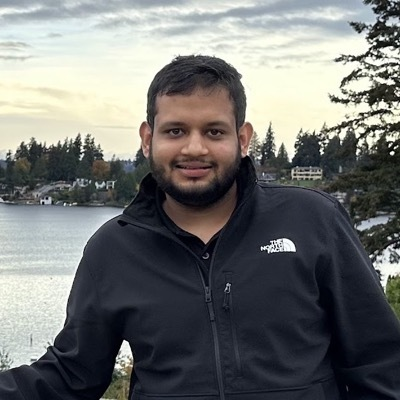

Scientific Agents
Scientific foundation models can represent molecules, proteins, physical fields, and observations, but a useful prediction is only one step in a scientific investigation. We focus on scientific agents: systems that use foundation models to formulate and revise hypotheses, select and execute tool-mediated actions, interpret evidence, and decide what to investigate next.
From scientific foundation models to agents that formulate hypotheses, choose experiments, and learn from evidence.
The third Workshop on Foundation Models for Science brings together machine learning researchers, domain scientists, and scientific infrastructure developers across biology, chemistry, materials, physics, Earth science, and computational mathematics. We ask:
- How should scientific agents be designed and trained?
- How should they use scientific knowledge and feedback?
- What evidence establishes that they make reliable scientific progress?
Scientific agents connect general reasoning models with specialized scientific models, simulators, analysis software, and experimental infrastructure. We welcome single-agent systems, multi-agent teams, search procedures, and human-guided workflows. Full autonomy is not required, and rigorous studies of failure are central to the workshop.
Building on our NeurIPS 2024 and ICLR 2026 editions, this workshop shifts the focus to adaptive scientific investigations: how models are composed, actions are selected, and new evidence changes subsequent decisions.
Scope and Open Problems
- Scientific tool use and composition of foundation models. Connect language and multimodal models with protein models, molecular generators, neural operators, PDE solvers, symbolic tools, and scientific databases. Study action representations, tool selection, interface validation, and uncertainty propagation.
- Experimental design and learning from feedback. Choose measurements, simulations, and interventions under limited budgets through active learning, Bayesian optimization, causal experimental design, reinforcement learning, multi-fidelity simulation, and adaptive stopping.
- Multi-agent collaboration and human scientific judgment. Understand when specialist roles, debate, and independent criticism improve scientific reasoning. Address correlated errors, evidence-grounded disagreement, human oversight, and comparisons with equally resourced single-agent systems.
- Long-running investigations, memory, and research workflows. Maintain coherent records of hypotheses, datasets, code, results, and rejected explanations. Develop persistent scientific memory, provenance, experiment search, reproducible workflows, and recovery from failed tools.
- Discovery through executable evaluation. Discover algorithms, numerical methods, mathematical constructions, and scientific software through program search and executable feedback. Study evaluator design, inference-time compute allocation, hidden-test generalization, and specification errors.
- Reliable evaluation and responsible scientific autonomy. Distinguish workflow completion, replication, hypothesis quality, and independently validated discovery. Explore contamination-aware benchmarks, uncertainty calibration, negative results, robustness, and permissioned laboratory execution.
We welcome methodological, theoretical, systems, and application contributions. Our discussions will inform a reporting checklist, a shared evaluation agenda, and a directory of contributed scientific tools, datasets, and reproducible workflows.
Speakers / Panelists (A-Z by Last Name)
Ian T. Foster
Professor, University of Chicago
Distinguished Fellow, Senior Scientist, MCS Division, Argonne
Shirley Ho
Group Leader, Cosmology X Data Science, CCA, Simons Foundation
Professor, Department of Physics & Center for Data Science, NYU

Bo Li
University of Illinois Urbana-Champaign
Ge Liu
Assistant Professor, University of Illinois Urbana-Champaign
Michael Mahoney
Professor, University of California at Berkeley
Vice President, International Computer Science Institute (ICSI)
Group Lead, Machine Learning and Analytics Group, Lawrence Berkeley National Laboratory
Yizhou Sun
Professor, UCLA
Call for Papers
We welcome new and ongoing work on scientific agents, including preliminary ideas, focused experiments, replications, negative results, tools, and demonstrations.
Regular papers: up to 8 pages. Short papers: up to 4 pages. References and appendices are excluded from these limits. Both tracks are eligible for contributed talks and posters.
The workshop is non-archival. Accepted papers will be publicly available on OpenReview.
Read the submission guidelines. The submission portal and template link will be announced here.
Tentative Important Dates
All deadlines are at 23:59 Anywhere on Earth (AoE). The dates below are tentative.
- Abstract registration: January 25, 2027
- Final paper submission: February 1, 2027
- Author notification: February 26, 2027
- Accepted papers public on OpenReview: February 26, 2027
- Workshop: April 29 or 30, 2027; assigned day and room to be confirmed
Tentative Schedule
We plan a one-day, in-person workshop from 09:00 to 17:00. Times are local to the venue. The program includes nine confirmed invited speakers. The assigned day, room, speaker order, and talk titles will be announced after confirmation.
| Local time | Session |
|---|---|
| 09:00 - 09:10 | Opening remarks |
| 09:10 - 09:40 | Invited talk 1 |
| 09:40 - 10:10 | Invited talk 2 |
| 10:10 - 10:35 | Poster session I, demonstrations, and coffee |
| 10:35 - 11:05 | Invited talk 3 |
| 11:05 - 11:35 | Invited talk 4 |
| 11:35 - 12:05 | Contributed talks 1-3 |
| 12:05 - 13:05 | Lunch and informal exchange |
| 13:05 - 13:35 | Invited talk 5 |
| 13:35 - 14:05 | Invited talk 6 |
| 14:05 - 14:35 | Invited talk 7 |
| 14:35 - 15:05 | Invited talk 8 |
| 15:05 - 15:35 | Invited talk 9 |
| 15:35 - 16:05 | Contributed talks 4-6 |
| 16:05 - 16:30 | Poster session II, demonstrations, and coffee |
| 16:30 - 16:50 | Evaluation panel |
| 16:50 - 17:00 | Small-group discussions, reports, and closing |
Each of the nine invited slots lasts 30 minutes: 25 minutes of presentation and 5 minutes of questions. Contributed slots include 8 minutes of presentation and 2 minutes of questions. The panel and small-group discussions will turn open scientific questions into concrete evaluation ideas and community research priorities.
Organizers

Wuyang Chen
Assistant Professor, Simon Fraser University
Ben Erichson
Senior Research Scientist, International Computer Science Institute (ICSI)
Research Scientist, Berkeley Lab

Mayank Jauhari
Applied Scientist, Amazon
Mansi Sakarvadia
Ph.D. Student, University of Chicago
Yuyang (Bernie) Wang
Principal ML Scientist, AWS AI
Participation and Access
We welcome researchers across disciplines, career stages, and institutional backgrounds. The short-paper track, poster sessions, written questions, and facilitated discussions create opportunities for newcomers and early-career researchers to participate.
The event is planned in person. Subject to permissions and recording arrangements, we will share slides, recordings or speaker-provided videos, posters, and a discussion synthesis online. Authors facing exceptional travel barriers may provide a prerecorded presentation and nominate an in-person poster presenter.
Sponsorship and Participant Support
We are seeking support for students and under-resourced participants. Sponsorship and travel support are not yet confirmed. Please contact foundationmodelscience@gmail.com to discuss supporting the workshop.